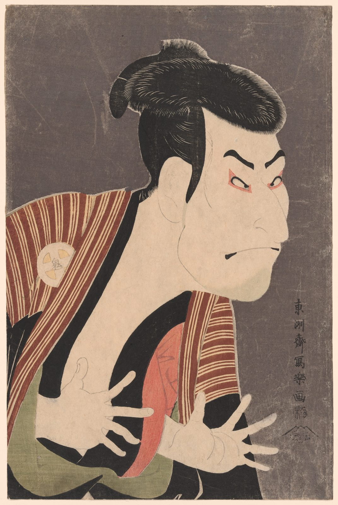

References / Illustration / 534
Sharaku, The Actor Ōtani Oniji III as Edobei
A half-length kabuki actor grimaces with spread, claw-like hands against a dark ground, in one of Tōshūsai Sharaku’s actor portraits of 1794.
- Source
- Art Institute of Chicago, 1934.207
- Creator
- Tōshūsai Sharaku
- Made
- 1794
- Style
- Ukiyo-e (agent-proposed, not yet reviewed by a person)
- Moods
- Dramatic, bold, graphic
- Evidence
- Downloaded and inspected the Art Institute of Chicago image of impression 1934.207 (1686 × 2516 px).
- Reviewed
- Rights
- Open license, stored. License: CC0-1.0. Rights policy
Context
AIC catalogues the sheet as a color woodblock print, ōban, 37.9 × 25 cm, dated 1794, signed “Tōshūsai Sharaku ga”. AIC gives the artist as active 1794–1795. AIC 1934.207.
Observed
- The actor fills the sheet and is cut by the left and bottom edges. He faces right, and the right third is empty ground.
- The ground is a dark, mottled gray, printed flat, with no horizon or setting.
- The face and hands are unprinted paper, drawn with thin black lines. Eyebrows, hair, and robe are solid black areas.
- The robe is a brown-red with fine cream stripes, a repeating textile pattern inside an outlined area.
- Small areas of pale green and pink-red sit between the black robe and the hands.
- The signature runs in one vertical column at the right, with a small seal under it.
Why it belongs
The portrait reduces the figure to a few flat shapes, so the outline and the black areas carry the expression.
The striped robe shows how the style keeps pattern inside a bounded shape rather than over the whole surface.
Borrow
Crop a figure hard at two edges and leave the opposite side as flat ground for one column of text.
Put a fine stripe pattern inside one outlined shape only.
Measured
Machine-extracted by tools/image-traits.py on . Full measurement.
- Mean chroma
- 0.14
- Palette
- #74655e 28%
- #dfc0a3 19%
- #363230 14%
- #675954 7%
- #fde8d5 5%
- #824a3d 4%
- #857668 3%
- #918466 3%



is_public_domain: true) and releases images of public-domain works under CC0. AIC open access. Sharaku worked in 1794–1795 and the print was published in 1794, so the work is public domain in Japan and the United States. License: CC0-1.0. Open the image for full size.